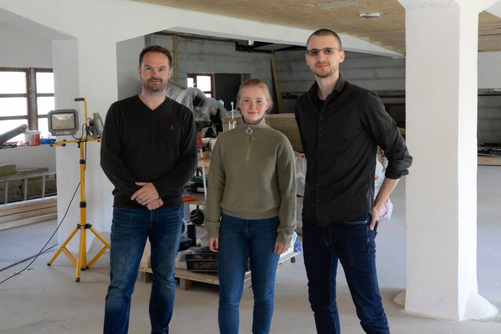

Innlegg
Fikk 300.000 kroner til nye treningslokaler

I løpet av året håper vi å flytte fra Ringerikshallen til nye lokaler i brua ved Nordre torg.
Ringerikes Blad var med da Øistein Røste, Artsiom Stalmakou, Helene Mala Haga og Ida Helen Bye møtte opp for den offisielle overrekkelsen av støtten på 300.000 kroner fra Sparebankstiftelsen DNB. Øistein Røste forteller at klubben søkte om støtte på 450.000 kroner fra DNB-stiftelsen i desember. Da banken ringte forrige uke trodde han de skulle selge noe. Det skulle de ikke.